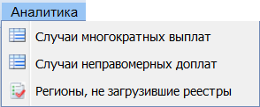
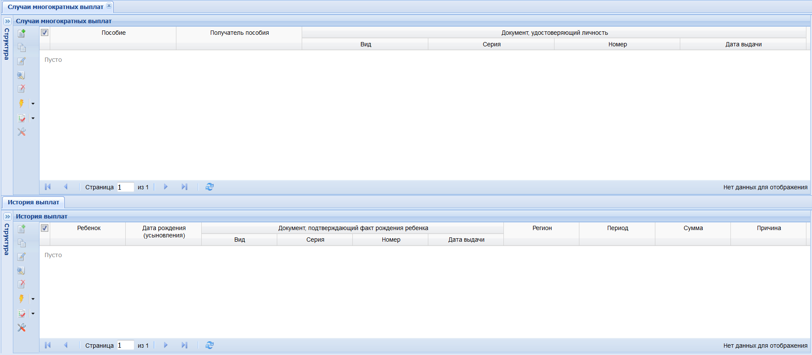
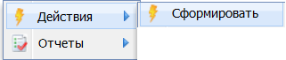
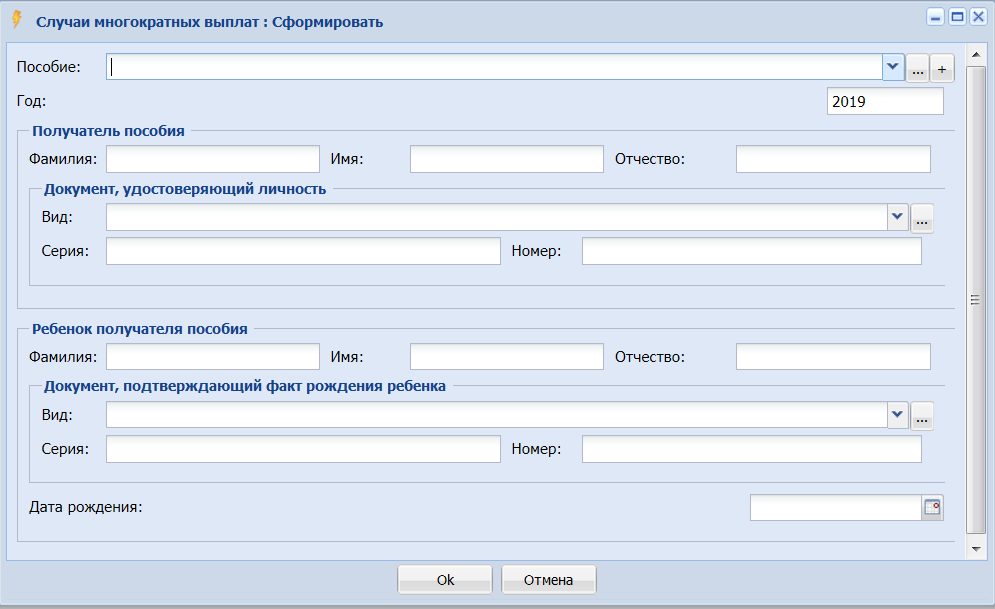
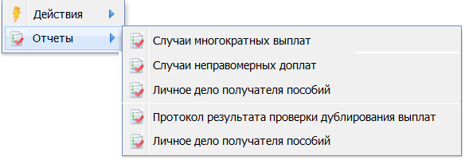

|
<< Click to Display Table of Contents >> 2.6 Раздел Аналитика |
  
|
|
<< Click to Display Table of Contents >> 2.6 Раздел Аналитика |
|
Раздел «Аналитика» обеспечивает проверку дублирования выплат по каждому типу реестров при вводе необходимой информации пользователем органов исполнительной власти субъектов Российской Федерации, осуществляющих полномочия в области социальной защиты населения. Проверка осуществляться по каждому получателю по всем регионам РФ. По результатам проверки Система позволяет выдавать на печать протокол с результатами проверки.
В данном разделе пользователь с ролью «Сотрудник ЦА» и «Аналитик ЦА» может просматривать и выполнять запросы по всем видам аналитики и аналитическим отчетам (все регионы). Для сотрудников с ролью «Субъект» аналитические отчеты «Случаи неправомерных доплат» и «Регионы, не загрузившие реестры» не доступны.
Для анализа информации и печати доступны аналитические формы (Рисунок 26).

Рисунок 26 - Аналитические отчеты по загруженным реестрам
Выбрать необходимый отчет, откроется форма (Рисунок 27).

Рисунок 27 - Форма для аналитического отчета
В верхней части экранной формы вызвать контекстное меню (Рисунок 28) и выбрать «Действия» а «Сформировать».

Рисунок 28 - Формирование аналитического отчета
Откроется форма с входными параметрами (Рисунок 29).

Рисунок 29 - Входные параметры для аналитического отчета
Важно! Для формирования сведений по разным пособиям по строке «Пособие» нажать + и выбрать из справочника необходимые виды пособий.
При заполнении входных параметров Система осуществляет поиск вхождений по всей базе данных по заданным критериям. В случае обнаружения совпадений формируется протокол с результатами проверки. Если совпадений не обнаружено, протокол не формируется и Система выдает сообщение «По заданным критериям дублирования выплат не обнаружено». Нажать «ОК». Откроется заполненная с учетом входных параметров форма (Рисунок 27).
При необходимости печати отчетов, вызвать контекстное меню и выбрать «Отчеты» (Рисунок 30). В зависимости от выбранного отчета, формируется отчет в Excel. Дальнейшие действия аналогичны описанным выше.

Рисунок 30 - Печать аналитических отчетов по выбранным параметрам